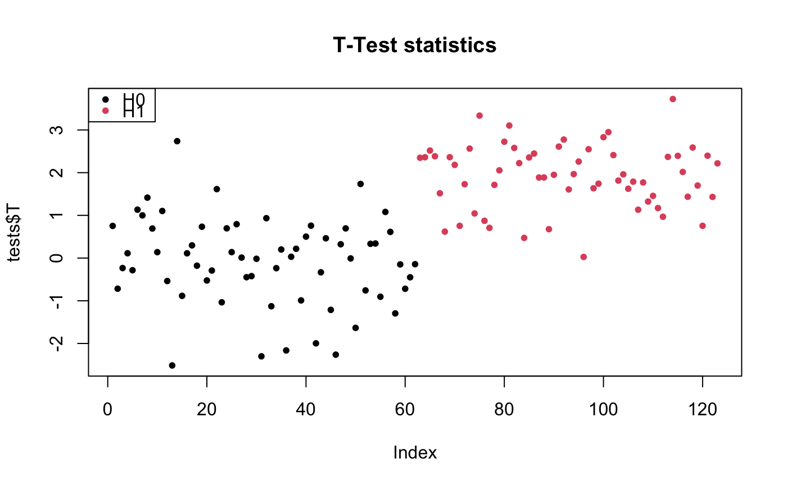
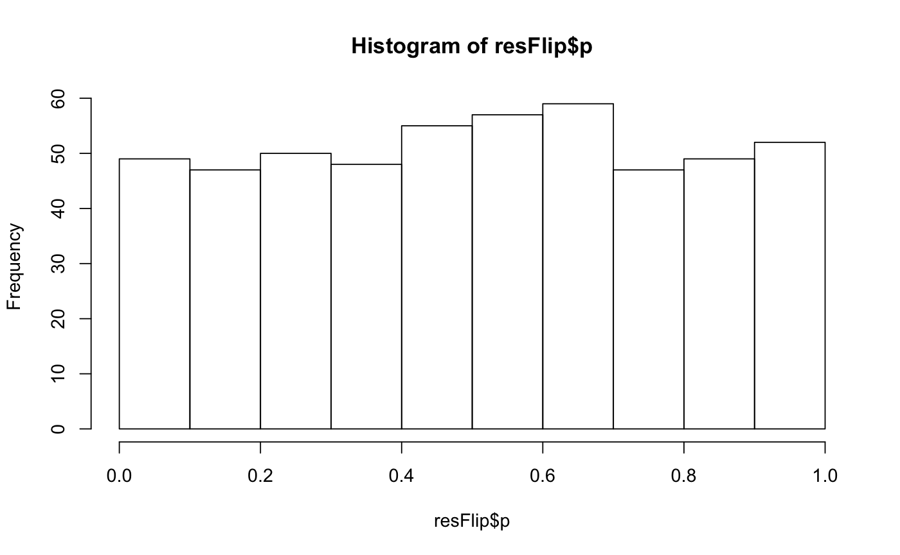

Randomization-based testing for equal means in two groups
testByRandomization(X, B, flavor = c("perm", "flip"), cls = NULL, p.value = TRUE, seed = NULL)
| X | a matrix of |
|---|---|
| B | A numeric value, the number of permutations to be performed |
| flavor | A character value, the type of randomization to be performed. Should either be "perm" for two-sample permutation or "flip" for sign flipping |
| cls | A vector of length |
| p.value | A boolean value: should \(p\)-values be calculated and returned? Defaults to @TRUE |
| seed | An integer (or NULL) value used as a seed for random number
generation. If |
a list with two or four elements:
A vector of \(m\) test statistics
A \(m \times B\) matrix of permutation test statistics
A vector of \(m\) \(p\)-values (only if
p.value is @TRUE)
A \(m \times B\) matrix of
permutation \(p\)-values (ony if p.value is @TRUE)
The test statistics is Welch's two-sample test for unequal variances
Ge, Y., Dudoit, S. and Speed, T.P., 2003. Resampling-based multiple testing for microarray data analysis. _Test_, 12(1), pp.1-77.
p <- 513 n <- 38 mat <- matrix(rnorm(p*n), ncol=n) cls <- rep(c(0, 1), times=c(27, n-27)) resPerm <- testByRandomization(X=mat, flavor="perm", cls=cls, B=1000) resFlip <- testByRandomization(X=mat, flavor="flip", B=1000) # show test statistics null distribution hist(resPerm$p)hist(resFlip$p)#> [1] "Joint Family-Wise Error Rate control: Step down procedure based on Simes family"#> [1] "Joint Family-Wise Error Rate control: Step down procedure based on Simes family"